Глава 14. Цепи с обратной связью
14.1. Определение и классификация обратных связей14.2. Передаточная функция цепи с обратной связью
14.3. Примеры цепей с обратной связью
14.4. Устойчивость цепи с обратной связью
Вопросы и задания для самопроверки
Глава 14. Цепи с обратной связью
14.1. Определение и классификация обратных связей
В большинстве цепей с зависимыми источниками имеется по крайней мере два пути прохождения сигнала: прямой (от входа к выходу) и обратный (с выхода на вход). Обратный путь прохождения сигнала реализуется с помощью специальной цепи обратной связи (ОС). Таких путей, а значит, и цепей ОС может быть несколько. Наличие в цепях с зависимыми источниками ОС придает им новые ценные качества, которыми не обладают цепи без ОС. Например, с помощью цепей ОС можно осуществить температурную стабилизацию режима работы цепи, уменьшить нелинейные искажения, возникающие в цепях с нелинейными элементами, улучшить технические параметры усилителей и т. д.
Введение ОС позволяет создавать цепи, генерирующие колебания различной формы (гл. 15), моделирующие различные функции (суммирование, интегрирование, дифференцирование и др. (гл. 2, 3)).
Кроме положительных, ОС могут оказывать и отрицательные последствия на цепь. Так, ОС могут образовываться за счет различных “паразитных” связей, возникающих в результате неудачного монтажа элементов цепи или при нерациональном формировании элементов в подложке микросхемы и др. Подобные ОС могут возникать на высоких частотах за счет различных “паразитных” емкостей создающих цепи обратной связи с выхода на вход. “Паразитные” ОС могут оказывать неконтролируемые воздействия на работу цепи и поэтому должны учитываться в необходимых случаях при расчетах. Все вышеизложенное свидетельствует о важности изучения цепей с ОС.
Обратные связи могут быть классифицированы по различных признакам: по характеру связи – положительной (ПОС), отрицательной (ООС) и комплексной; по структуре – внешней и внутренней; по характеру реализующих ее элементов – активной и пассивной, линейной и нелинейной, частотно зависимой и частотно независимой и т. д.
С точки зрения анализа важным являются способы соединения четырехполюсников прямой передачи и цепи ОС. На рис. 14.1 представлены основные схемы соединения четырехполюсника каналов прямого усиления с передаточной функцией Hу(p) и четырехполюсника цепи ОС с передаточной функцией Hос(p). Причем, в качестве четырехполюсника с Hу(p) обычно используют активные цепи (усилитель), а в качестве цепи ОС с передаточной функцией Hос(p) пассивный четырехполюсник. В дальнейшем ограничимся случаем, когда усилитель и цепь ОС являются линейными четырехполюсниками.
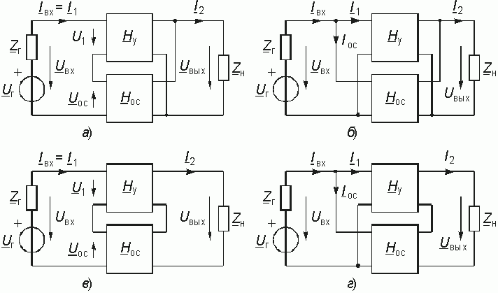
Данные схемы соответствуют последовательно-параллельному (а), параллельному (б), последовательному (в) и параллельно-последовательному (г) соединению четырехполюсников (см. § 12.3). В соответствии с этим для анализа подобных сложных четырехполюсников могут использоваться H, Y, Z, F-параметры соответственно, поэтому в литературе иногда эти структуры называют ОС H, Y, Z и F-типа соответственно.
В соответствии со структурными схемами (рис. 14.1) различают следующие виды ОС: последовательной по напряжению (рис. 14.1, а), т. к. Uос зависит от Uвых; параллельной по напряжению (рис. 14.1, б), поскольку ток Iос является функцией выходного напряжения U2; последовательной по току (рис. 14.1, в), т. к. Uос в этой схеме зависит от выходного тока I2; параллельной по току (рис. 14.1, г), потому что Iос будет зависеть от выходного тока I2.
Для определения типа ОС (по току или напряжению) необходимо помнить, что ОС по напряжению будет максимальной при ХХ на выходе и минимальной при КЗ на выходе, а ОС по току будет максимальной при КЗ на выходе и минимальной (равной нулю) при ХХ на выходе.
14.2. Передаточная функция цепи с обратной связью
Определим передаточную функцию по напряжению цепи с обратной связью на примере схемы, изображенной на рис. 14.1 а, и проанализируем влияние ОС на основные параметры усилителя с ОС цепи как сложного четырехполюсника.
Для этого типа ОС можно записать следующее равенство согласно ЗНК в операторной форме (рис. 14.1, а):
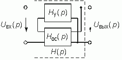
Тогда для изображения выходного напряжения можно согласно рис. 14.2 записать:

где  – операторная передаточная функция по напряжению.
– операторная передаточная функция по напряжению.
Операторное изображение Uос(р) можно записать через передаточную функцию Нос(р) цепи обратной связи

а напряжение U1(р) через передаточную функцию усилителя Ну(р):

Отсюда с учетом (14.1) и (14.2) операторная передаточная функция по напряжению цепи с ОС (см. рис. 14.2) будет равна

Переходя в (14.3) от оператора р к оператору jw , получаем комплексную передаточную функцию

Таким образом, частотные свойства цепи в равной мере зависят как от Hу(jw ) канала прямого усиления, так и от Нос(jw ) цепи обратной связи. Поэтому можно, оставляя неизменным основной элемент системы, в широких пределах изменять частотную характеристику всей цепи, изменяя лишь параметры цепи обратной связи.
Произведение Hу(jw )× Нос(jw ) = Нр(jw ) представляет собой комплексную передаточную функцию усилителя и цепи обратной связи при условии, что обратная связь разорвана (рис. 14.3, а). Функцию Нр(jw ) называют передаточной функцией по петле ОС или петлевым усилением. Введем понятия положительной и отрицательной обратной связи. Эти понятия играют заметную роль в теории цепей с обратной связью.
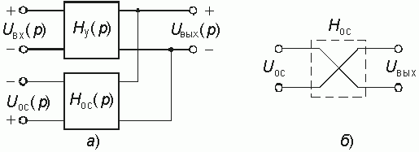
Предположим вначале, что передаточные функции Hу, Нос, Нр не зависят от частоты и являются вещественными числами. Такая ситуация возможна, когда в цепи отсутствуют LC-элементы. При этом Нр может быть как положительным, так и отрицательным числом. В первом случае сдвиг фаз между входным и выходным напряжениями, или другими словами, сдвиг фаз по петле обратной связи равен нулю или 2kp , k = 0, 1, 2, ... Во втором случае, когда Нр < 0, сдвиг фаз по этой петле равен ±p или ±(2k – 1)p . (Заметим, что сдвиг фаз на ±p можно легко получить путем перекрещивания проводов, например так, как показано на рис. 14.3, б).
Если в цепи с обратной связью сдвиг фаз по петле равен нулю, то обратная связь называется положительной, если же сдвиг фаз равен ±p , то такая обратная связь называется отрицательной.
Передаточную функцию Нр(jw ) можно изобразить в виде векторов и показать их на комплексной плоскости. При положительной обратной связи вектор Нр(jw ) находится на положительной вещественной полуоси, а при отрицательной обратной связи — на отрицательной вещественной полуоси.
В § 4.1 было введено понятие годографа передаточной функции. Напомним, что годографом называется кривая, которую описывает конец вектора Нр(jw ) при изменении частоты w (рис. 4.3, в и 14.4).
Представление Нр(jw ) в виде годографа позволяет определить вид обратной связи в случае частотнозависимой обратной связи.
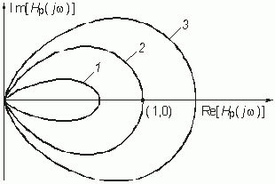
Обратная связь называется положительной, если годограф Нр(jw ) лежит в правой, и отрицательной – если в левой полуплоскости комплексной плоскости. Отрицательная ОС применяется для стабилизации коэффициента усиления, подавления паразитных сигналов, коррекции частотных характеристик; положительная ОС может являться причиной неустойчивости цепи. Поясним это. Пусть Нос и Hу – положительные вещественные числа. Тогда при Hу× Нос = 1, т. е. когда Нос = 1/ Hу, значение передаточной функции (14.4) стремится к бесконечности. Это означает, что даже при бесконечно малых значениях амплитуды входного напряжения uвx(t) амплитуда выходного напряжения uвыx(t) будет неограниченно возрастать. Говорят, что в этом случае наступает самовозбуждение цепи с ОС. Поэтому при проектировании цепей с обратной связью одной из основных задач является исследование их устойчивости. Таким образом, термины неустойчивость и самовозбуждение являются синонимами.
Обратная связь существенно влияет на результирующие параметры цепи с ОС; в частности ее входное и выходное сопротивления и коэффициенты передачи. Рассмотрим влияние ОС на параметры усилителя на примере схемы, изображенной на рис. 14.2.
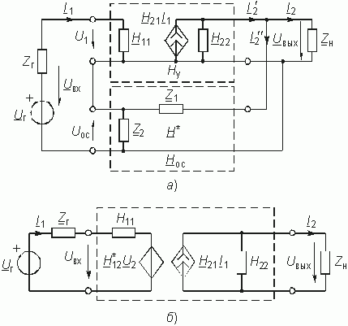
На рис. 14.5 изображена эквивалентная схема с зависимым источником напряжения с H-параметрами при отсутствии внутренней ОС (H12 = 0);

Четырехполюсник ОС представлен в виде четырехполюсника с матрицей Hос-параметров

Запишем согласно (12.5) уравнения активного и пассивного четырехполюсников в H-параметрах:


Матрица H-параметров сложного четырехполюсника определяется с учетом § 12.3 как

Поскольку в данной схеме (рис. 14.5) ОС предназначена для получения на выходе четырехполюсника определенного напряжения Uос, то основное значение на свойство усилителя должен играть коэффициент H12ос. Учитывая, что цепь ОС отбирает часть полезной энергии из нагрузки необходимо стремиться, чтобы H22ос  H22. Кроме того, для уменьшения потерь входного сигнала на входном сопротивлении цепи с ОС, необходимо выполнение условия H11
H22. Кроме того, для уменьшения потерь входного сигнала на входном сопротивлении цепи с ОС, необходимо выполнение условия H11  H11ос. Если при этом учесть, что обычно H21
H11ос. Если при этом учесть, что обычно H21  H21ос и для пассивной цепи H12ос < 1, то окончательно матрица H-параметров сложного четырехполюсника с цепью ОС примет вид
H21ос и для пассивной цепи H12ос < 1, то окончательно матрица H-параметров сложного четырехполюсника с цепью ОС примет вид

При этом уравнения передачи H-параметров примут вид (рис. 14.5, б)

С помощью системы уравнений (14.9) можно определить искомые зависимости токов и напряжений от параметров цепи ОС. Можно, в частности показать, что отрицательная ОС (ООС) уменьшает коэффициент передачи по напряжению усилителя в k-раз, а входное сопротивление увеличивает в k-раз, где

Так как рассмотренный тип ОС (последовательной по напряжению) ведет к увеличению входного и уменьшению выходного сопротивлений усилителя, то это позволяет осуществить трансформацию сопротивлений, что используется для согласования отдельных каскадов усилителя.
Следует также отметить, что коэффициент передачи ОУ с последовательной ОС по напряжению при бесконечно большом коэффициенте усиления является функцией только параметров элементов цепи ОС.
В заключении рассмотрим влияние ОС на стабильность коэффициента усиления, как основного показателя усилителя.
Для отрицательной и вещественной ОС согласно уравнению (14.4) для коэффициента усиления усилителя можно записать

Продифференцируем (14.11) по Hу и Hос

Отсюда относительная нестабильность коэффициента усиления с учетом (14.11) будет равна


Анализ (14.13) показывает, что нестабильность коэффициента усиления усилителя с ОС в  раз меньше чем без ОС.
раз меньше чем без ОС.
Равенство (14.14) показывает, что при
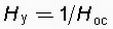
Аналогичным образом можно найти коэффициент передачи и исследовать влияние ОС на параметры других схем с ОС (см. рис. 14.1 б)—г)). При этом надо иметь ввиду, что в соответствующих выражениях будут фигурировать не только комплексные коэффициенты передачи по напряжению, но и по току, а также передаточные комплексные сопротивления и проводимости. Кроме того уравнения передачи соответствующих четырехполюсников в зависимости от типа соединения должны быть записаны в Z или F-параметрах (см. § 12.2).
14.3. Примеры цепей с обратной связью
Масштабный усилитель с неинвертирующим входом. На рис. 14.6, а изображена цепь на ОУ, предназначенная для масштабирования напряжения, а на рис. 14.6, б – ее схема замещения с зависимым источником типа ИНУН. В гл. 2 данная схема анализировалась методом узловых потенциалов. Получим передаточную функцию этой цепи как цепи с обратной связью, используя формулу (14.4).
Цепью обратной связи на схеме рис. 14.6 служит Г-образный делитель напряжения, составленный из резистивных сопротивлений R0 и R1. Выходное напряжение усилителя U2 поступает на вход цепи ОС (узлы 2—4); напряжение ОС U3 снимается с резистора R1 (узлы 3—4). Передаточная функция по напряжению цепи ОС

Воспользуемся формулой (14.4) и учтем, что входное напряжение U1 и напряжение обратной связи U3 не суммируются, а вычитаются. Тогда получим передаточную функцию масштабного усилителя:

Учитывая, что в реальных ОУ значение  , окончательно имеем:
, окончательно имеем:
 что, естественно, совпадает с результатом, полученным в гл. 2 методом узловых напряжений.
что, естественно, совпадает с результатом, полученным в гл. 2 методом узловых напряжений.
Звено на ОУ с частотно-зависимой ОС.
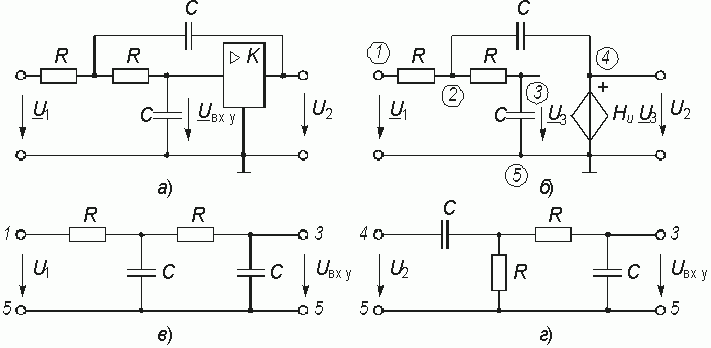
Звено такого вида представлено на рис. 14.7, а, а его схема замещения – на рис. 14.7, б. Чтобы проанализировать прямой путь прохождения сигнала и путь прохождения сигнала ОС, необходимо воспользоваться методом наложения (см. § 2.3). Для этого следует поочередно исключать источники входного напряжения и напряжения обратной связи, заменяя их внутренним сопротивлением. В случае идеальных источников напряжения (рис. 14.17, б) их внутреннее сопротивление равно нулю. Из схемы замещения следует, что напряжение U1, приложенное к звену, ослабляется входной цепью, представляющей собой Г-образный делитель напряжения с сопротивлениями Z1 и Z0 в плечах (рис. 14.7, в). Передаточная функция по напряжению такого делителя равна

Цепь обратной связи (рис. 14.7, г) также является Г-образным четырехполюсником с передаточной функцией

Коэффициент усиления ОУ Hу = –Hu.
В соответствии с формулой (14.4) получаем, передаточную функцию звена:

Учитывая, что  , получаем:
, получаем:

Данное звено может выполнять различные функции в зависимости от вида сопротивлений Z0 и Z1. При Z0 = R0 и Z1 = R1 звено превращается в инвертирующий масштабный усилитель (см. гл. 2); при Z0 = l/ jw C и Z1 = R – в интегратор; при Z0 = R и Z1 = = l/ jw C – в дифференциатор (см. гл. 3).
Звено второго порядка с регулируемым коэффициентом усиления.
Схема звена показана на рис. 14.8, а. Усилитель с регулируемым коэффициентом усиления К может быть выполнен либо на транзисторных каскадах, либо на ОУ по схеме рис. 14.6, a, либо на других активных элементах. В схеме замещения на рис. 14.8, б он представлен идеальным ИНУН.
Анализ прохождения входного сигнала и сигнала в цепи ОС показывает, что звено имеет входную цепь, изображенную на рис. 14.8, в и цепь ОС, показанную на рис. 14.8, г. Передаточные функции этих цепей можно получить матричным методом (см. гл. 12), например, рассматривая каждую цепь как каскадное соединение соответствующих Г-образных четырехполюсников.
Для входной цепи (см. § 3.11)

Для цепи ОС

С учетом (14.3) получим передаточную функцию звена
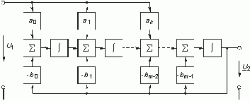

Коэффициент передачи усилителя Ну(р) = К. Тогда, подставляя (14.6) и (14,7) в (14.8), после преобразований имеем

Моделирование передаточных функций общего вида. Передаточная функция линейной цепи представляется согласно (7.41) в виде рациональной дроби:

Приведя (14.9) к общему знаменателю, получим:

Это равенство можно переписать в виде

Так как операции l/ pm соответствует m-кратное интегрирование, то последнему уравнению соответствует структурная схема, изображенная на рис. 14.9.
Таким образом, с помощью интеграторов, сумматоров, масштабных усилителей, умножителей может быть реализована передаточная функция Н(р) достаточно общего вида.
14.4. Устойчивость цепи с обратной связью
Введем понятия устойчивой и неустойчивой цепи. Цепь называется устойчивой, если свободные колебания с течением времени стремятся к нулю. В противном случае цепь называется неустойчивой. Из теории переходных процессов (гл. 6, 7) следует, что цепь является устойчивой, если корни характеристического уравнения лежат в левой полуплоскости комплексной переменной р. Если корни такого уравнения лежат в правой полуплоскости, то цепь является неустойчивой, т. е. она находится в режиме самовозбуждения. Таким образом, для определения условий устойчивости цепи достаточно найти характеристическое уравнение и его корни. Как видим, условия устойчивости можно определить и не вводя понятие обратной связи. Однако здесь возникает ряд проблем. Дело в том, что вывод характеристического уравнения и определение его корней являются громоздкой процедурой особенно для цепей высокого порядка. Введение понятия обратной связи облегчает получение характеристического уравнения или даже дает возможность обойтись без него. Крайне важно и то, что понятие обратной связи адекватно физическим процессам, возникающим в цепи, поэтому они становятся более наглядными. Глубокое понимание физических процессов облегчает работу по созданию автогенераторов, усилителей и т. д.
Рассмотрим цепь (см. рис. 14.2) и выведем ее характеристическое уравнение. Пусть uвх(t) = 0 и, значит, Uвх(р) = 0. Тогда из (14.2) следует:

Здесь Uвых(р) ¹ 0 (в противном случае цепь нельзя считать возбужденной) и поэтому равенство (14.20) выполняется при условии

Если записать передаточную функцию основной цепи в виде (7.41):  , а цепи ОС –
, а цепи ОС –  , то уравнение (14.11) перепишется следующим образом:
, то уравнение (14.11) перепишется следующим образом:

Это равенство выполняется при

Выражение в левой части этого равенства является полиномом, поэтому (14.22) можно записать в общем виде:

Это и есть характеристическое уравнение цепи.
Заметим еще раз, что точно такое же уравнение мы бы получили, составляя дифференциальное уравнение по законам Кирхгофа, как мы это делали при изучении переходных процессов.
Корни уравнения (14.23) в общем случае являются комплексными величинами

где pk = a k + jw k. Зная корни характеристического уравнения, можно записать выходное напряжение (см. § 6.2):

Чтобы напряжение uвых(t) не возрастало безгранично, всем корням p1, p2, ... , pm характеристического уравнения необходимо иметь отрицательные вещественные части, т. е. корни должны располагаться в левой полуплоскости комплексной переменной р = = a + jw . Цепь с ОС, обладающая такими свойствами, называется абсолютно устойчивой.
При исследовании цепей с обратной связью могут возникать две проблемы. Если проектируемая цепь должна быть устойчивой, то необходимо располагать критерием, который по виду функций Ну(р) и Нос(р) позволял бы судить об отсутствии корней характеристического уравнения в правой полуплоскости р. Если обратная связь используется для создания неустойчивой автоколебательной цепи, то следует убедиться, что корни уравнения (14.23) расположены, наоборот, в правой полуплоскости. При этом необходимо иметь такое расположение корней, при котором самовозбуждение происходило бы на требуемой частоте.
Рассмотрим критерии устойчивости цепи с обратной связью.
Критерий устойчивости Рауса — Гурвица. Он относится к алгебраическим критериям устойчивости и позволяет по значениям коэффициентов bт, bт–1, ..., b0 характеристического уравнения (14.23), без определения его корней, узнать является ли исследуемая цепь устойчивой.
Критерий формулируется следующим образом: цепь с обратной связью является устойчивой, если полином характеристического уравнения, является полиномом Гурвица. При этом используется основное свойство полинома Гурвица: все его корни находятся в левой полуплоскости комплексной переменной р.
Для того, чтобы многочлен  являлся полиномом Гурвица, необходимо и достаточно, чтобы были положительными определитель Рауса—Гурвица:
являлся полиномом Гурвица, необходимо и достаточно, чтобы были положительными определитель Рауса—Гурвица:

и все главные миноры этого определителя.
При составлении определителя Гурвица можно руководствоваться следующим правилом. В первой строке записываются коэффициенты полинома Гурвица через один, начиная со второго. Во второй строке записываются коэффициенты полинома через один, начиная с первого. Вторая пара строк формируется путем смещения первой пары строк на одну позицию. Третья пара — смещением второй пары строк еще на одну вправо и т. д.
Пример.
Проверим с помощью критерия Рауса—Гурвица устойчивость цепи с обратной связью, характеристическое уравнение которой имеет вид 
1. Составляем определитель Рауса—Гурвица

Главные миноры получаем вычеркиванием правого столбца и нижней строки из определителя или предыдущего минора:

2. Вычисляем определитель Рауса—Гурвица и его главные миноры. Расчет удобно проводить в следующем порядке:


Определитель Рауса—Гурвица и его главные миноры положительны. Таким образом, цепь с ОС устойчива.
Критерий устойчивости Найквиста.
Критерий Найквиста позволяет судить об устойчивости цепи с обратной связью по свойствам разомкнутой цепи (рис. 14.3, а).
Передаточная функция разомкнутой цепи, или петлевое усиление,  входит в характеристическое уравнение (14.21):
входит в характеристическое уравнение (14.21):

Если найдется такая частота w , для которой конец вектора Hр(jw ) попадает в точку с координатами (1,j0), то это будет означать, что выполняется условие (14.25), т. е. на этой частоте в цепи произойдет самовозбуждение. Значит, по годографу можно определить, устойчива цепь или нет. Для этого используется критерий Найквиста, который формулируется следующим образом: если годограф передаточной функции разомкнутой цепи не охватывает точку с координатами (1, j0), то при замкнутой цепи обратной связи цепь является устойчивой. В том случае, когда годограф Hр(w ) охватывает точку (1, j0), цепь неустойчива. На рис. 14.4 показаны годографы трех цепей с положительной обратной связью (цифра 1 соответствует годографу устойчивой цепи).
Пользуясь критерием Найквиста, легко получить условия самовозбуждения цепи с ОС. Запишем выражение для Hр(jw ) в виде

где  – модули передаточных функций;
– модули передаточных функций;  ,
,  – фазовые сдвиги соответственно в основном элементе и в цепи ОС.
– фазовые сдвиги соответственно в основном элементе и в цепи ОС.
Условия пересечения годографом оси абсцисс Re[Hр(jw
)] при |Hр(jw
)|  1 можно записать в виде двух условий:
1 можно записать в виде двух условий:
1) условие (уравнение) баланса фаз  , где п = 0, 1, 2,...;
, где п = 0, 1, 2,...;
2) амплитудное условие

Выполнение неравенства соответствует режиму возникновения колебаний с нарастающей амплитудой, что характерно для начального этапа самовозбуждения. Выполнение равенства Hу(w )´ ´ Hос(w ) = 1 соответствует режиму генерации гармонического напряжения на частоте w с постоянной амплитудой и носит название баланса амплитуд.
Как будет показано ниже, уравнение баланса фаз позволяет определить частоту, на которой происходит самовозбуждение цепи с ОС, а уравнение баланса амплитуд дает возможность определить величину амплитуды uвых(t) генерируемого колебания в стационарном режиме.
Пример.
Исследуем устойчивость цепи, изображенной на рис. 14.8, a, В ней можно выделить усилительный элемент с передаточной функцией Ну = К и цепь обратной связи (рис. 14.8, г) с передаточной функцией (14.17) 
где t = RC.
Кроме того, напомним, что на усилитель сигнал поступает через входную цепь (рис. 14.8, в), передаточная функция которой (см. (14.16))

Получим характеристическое уравнение цепи:

или
 .
.
Откуда окончательно получаем

Корни характеристического уравнения (14.16)

зависят от коэффициента усиления усилителя К. Расположение корней p1 и p2 на плоскости комплексного переменного р для разных коэффициентов усиления и соответствующие этому графики свободных колебаний в цепи показаны на рис. 14.10.
Устойчивость данной цепи можно исследовать и с помощью критерия Найквиста. Комплексная передаточная функция разомкнутой цепи равна

На рис. 14.4 приведены годографы Hр(jw ) устойчивой (К = 2, кривая 1) и неустойчивой (К = 3, кривая 2; К = 4, кривая 3) цепи.
Критерий устойчивости Михайлова.
Этот простой и эффективный критерий был предложен в 1938 г. А.В. Михайловым и базируется он на характере поведения аргументов полинома Гурвица v(jw
) при изменении частоты w
от нуля до бесконечности.
Положим, что полином Гурвица степени m

имеет l пар комплексно-сопряженных корней с отрицательной вещественной частью  . Остальные m—2l корней – вещественные отрицательные числа:
. Остальные m—2l корней – вещественные отрицательные числа:  . Если учесть при этом, что произведение линейных множителей двух комплексно-сопряженных корней равно
. Если учесть при этом, что произведение линейных множителей двух комплексно-сопряженных корней равно

где 
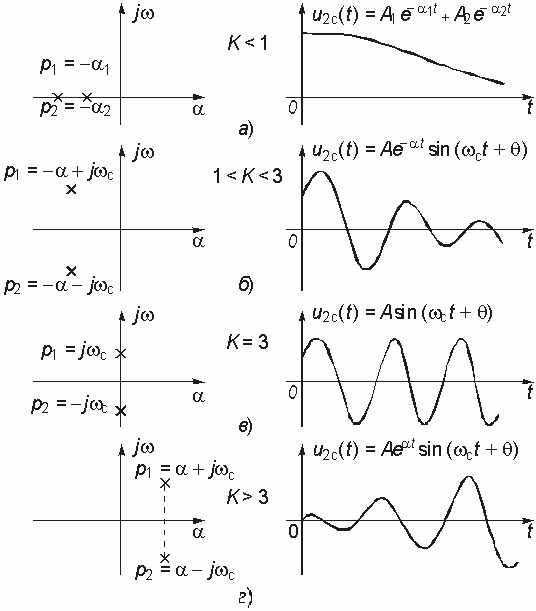

или далее полагая, что p = jw , получим

Как комплексную величину (14.28) можно представить в показательной форме

где


Как следует из (14.29), (14.30), (14.31) с увеличением w
от 0 до ¥
 монотонно возрастает от 0 до mp
/
2. Это свойство аргумента полинома Гурвица и лежит в основе критерия Михайлова, который формулируется следующим образом: если при изменении частоты w
от 0 до ¥
аргумент полинома Гурвица
монотонно возрастает от 0 до mp
/
2. Это свойство аргумента полинома Гурвица и лежит в основе критерия Михайлова, который формулируется следующим образом: если при изменении частоты w
от 0 до ¥
аргумент полинома Гурвица  возрастает на угол mp
/
2 (где m – степень полинома), то цепь будет устойчивой.
возрастает на угол mp
/
2 (где m – степень полинома), то цепь будет устойчивой.
Действительно, если среди корней v(p) есть хотя бы один вещественный положительный корень, то в слагаемом типа (14.30) появится слагаемое  и поэтому согласно (14.30)
и поэтому согласно (14.30)  < mp
/
2.
< mp
/
2.
Критерий Михайлова имеет простой геометрический смысл: годограф v(jw ) устойчивой цепи при изменении w от 0 до ¥ будет последовательно обходить в положительном направлении (против часовой стрелки) m квадрантов комплексной плоскости. На рис. 14.11 получены годографы устойчивой – а и неустойчивой – б цепи 4-го порядка:
В первом случае годограф v(jw ) обходит 4 квадранта монотонно (последовательно) против часовой стрелки, при этом аргумент возрастает до величины
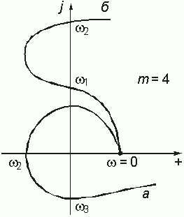
Во втором случае неустойчивой цепи  изменяется скачком от 2-го квадранта в 4-й, при этом
изменяется скачком от 2-го квадранта в 4-й, при этом  .
.
Вопросы и задания для самопроверки
- Как рассчитывается передаточная функция цепи с обратной связью?
- Записать уравнение передачи для цепи, изображенной на рис. 14.1, в.
- Доказать, что операторная передаточная функция дифференциатора на операционном усилителе равна (–pRC). Построить график АЧХ такого дифференциатора.
- Определить передаточную функцию цепи, изображенной на рис. 14.9.
- Что такое годограф петлевого усиления? Как по годографу определить тип обратной связи?
- Как формулируется критерий устойчивости Найквиста? Для каких цепей он используется?
- Сформулируйте критерий устойчивости Рауса-Гурвица. Как составить определитель Гурвица? Приведите примеры.
- Определить комплексную передаточную функцию Hр(jw ) цепи на рис. 14.9 разомкнутой обратной связью. Исследуйте зависимость устойчивости цепи от величины коэффициента усиления К.
- В чем геометрический смысл критерия устойчивости Михайлова?
- Определить относительные изменения коэффициентов усиления трех усилителей, охваченных ООС с коэффициентом передачи Hос = 0,01, если их коэффициенты усиления без ОС равны H1у = 5× 102; H2у = 5× 103; H3у = 5× 104, а относительная стабильность коэффициента усиления составляет 1%.
Ответ:  .
.
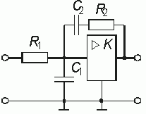
Ответ: 
Ответ: 
Ответ:  ;
;  ;
;  .
.